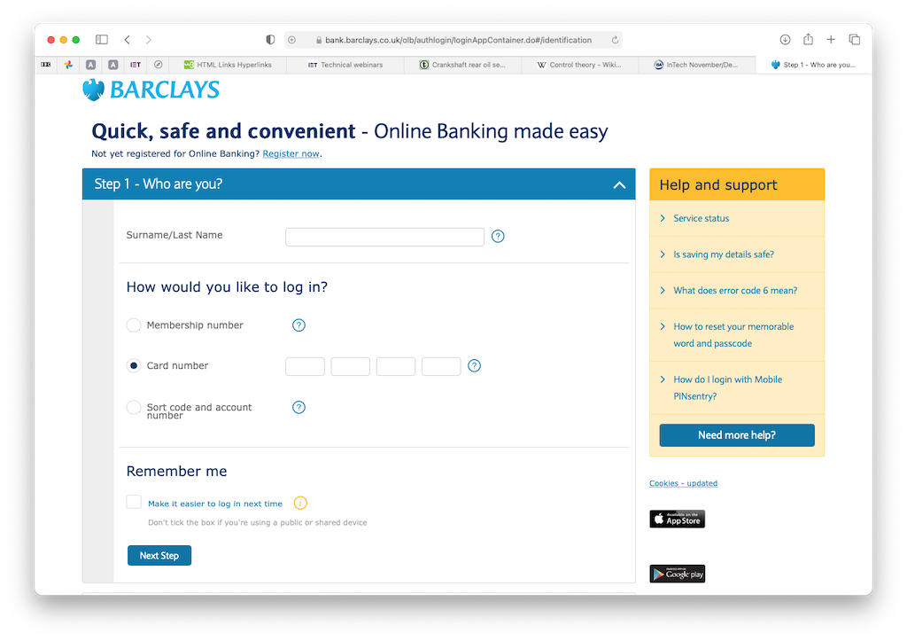
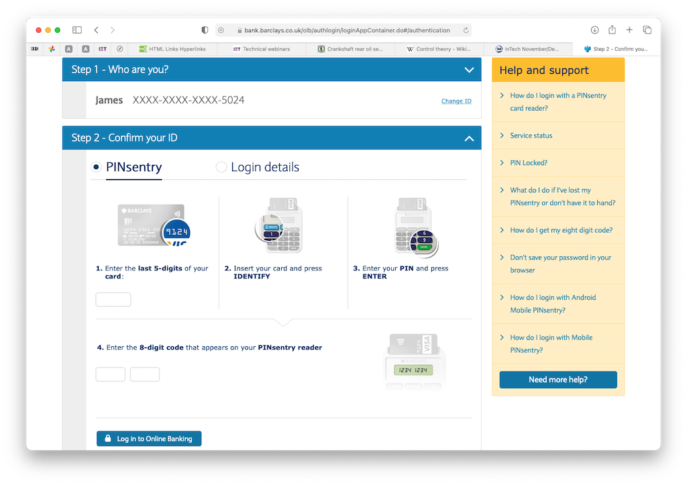
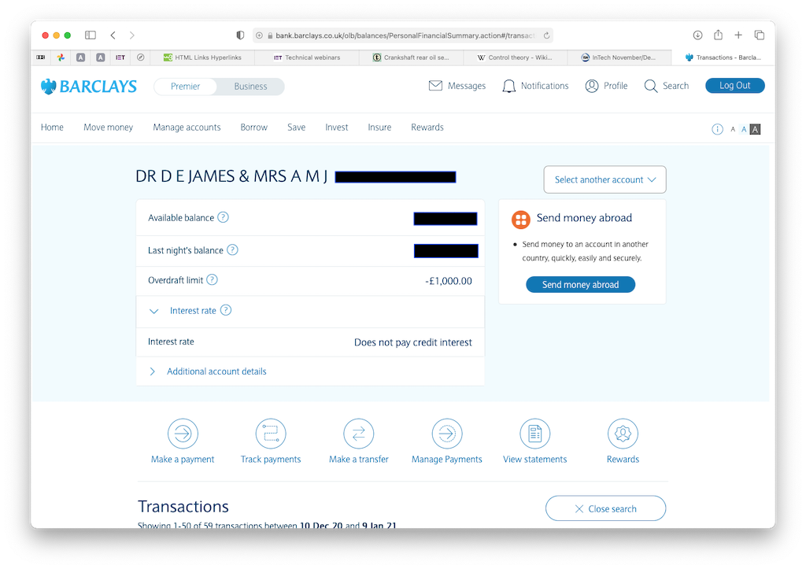

We use online banking to check our current account (and Dad's current account), set up and revise standing orders and to make payments, known as 'transfers'. This page explains how to access online facilities.
You may then be asked to chose an account. Since you only have one it may take you directly to our account. When on the account page you can scroll down to see the transactions and make payments, view/add/amend standing orders, etc..
© David James 2021 Last updated: 9th January 2021